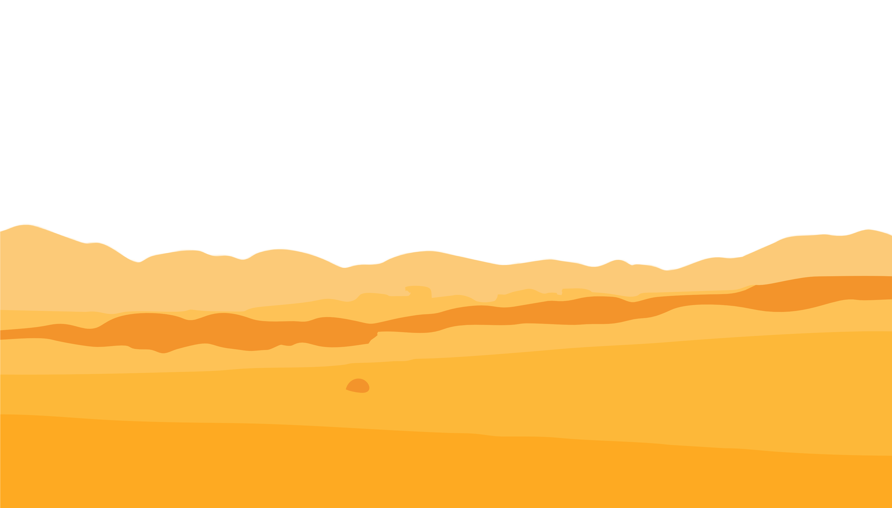

Pendahuluan
Awal Kehidupan Nabi Adam
Di masa lampau, sebelum manusia diciptakan, Allah menciptakan langit, bumi, dan segala isinya. Kemudian, Allah menciptakan Nabi Adam, manusia pertama, dari tanah liat yang dibentuk dengan sempurna. Setelah itu, Allah meniupkan ruh ke dalamnya, sehingga Adam menjadi makhluk hidup pertama yang memiliki akal dan kemampuan berbicara. Allah memuliakan Adam dan memerintahkan para malaikat untuk bersujud kepadanya sebagai bentuk penghormatan, bukan penyembahan. Semua malaikat patuh kecuali Iblis, yang menolak karena merasa dirinya lebih mulia lantaran diciptakan dari api.